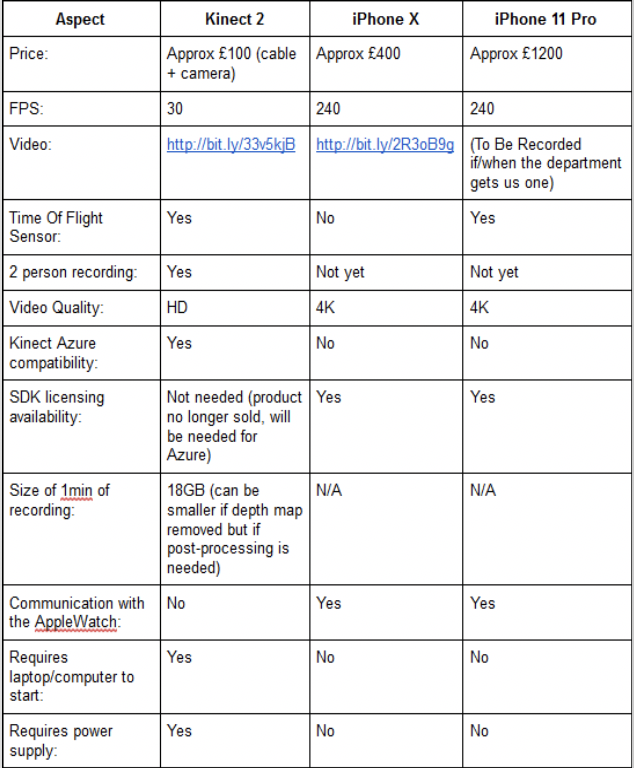

After reasearching similar projects online we have found several articles which have similar goals with us. Thus we picked up two articels we think is most appropiate to compare with and comes up with following reviews.
After viewing the whole paper we found there were quite a lot of useful information in it. It was extremely applicable to us, as the researchers used the same cameras as us, to the same or similar ends.
The first part of the article is about calibration and fusion of using multiple kinect devices at the same time, due to the fact that the latest Kinect Azure synchronise sensors stream from multiple Kinect devices easily, so we decided not to go too deep with this part.
Then the next part is about motion analysis, their way of dividing whole body parts into five sub parts and analysing them separately to obtain a result posture is a clever way to do it and we think this is a possible approach to take in our project as well. Even though we are not so familiar with machine learning, but we will make some notes about their method and potentially use it in the later part of the project.
It was interesting to learn how one can maneuver around occlusions while performing skeletal tracking with Kinect cameras. This will be specifically helpful to us as the styles of dancing we are tracking are in pairs/couples, and we expect occlusions will happen fairly often.
In terms of their testing result, there are a couple of issues with this. First of all, this was set-up to just target a single dance, whereas our project encapsulates many more dances. Furthermore, the dance that is described in the paper was relatively easy to perform thus might have been the reason why they reached reasonable accuracy.
In conclusion, the paper was a helpful insight in skeletal tracking specifically for dance with Kinect cameras, tailoring said tracking to a specific dance style, and dealing with object or human occlusions while tracking a dancer, and it will be considered in the development of our project.
This article is describing the way to use Microsoft Kinect camera for automated rehabilitation exercise evaluation. The evaluation process is using the parameter that have been explicitly defined by a new parameterization method based on Labanotation. Due to the huge amount of information this article includes, only a few sections of this article is gonna be used.
The first part is introducing the basic concepts about Kinect sensor, it go through the way Kinect recognise joints data from camera and also accuracy problem that occur at the same time. It contains some ideas that we are agreed with after our own testing, like the difficulty of recognising some specific body movements due to joints occlusion.
Then the next part is about choosing the suitable exercise for evaluation, even though these information are not related to our project goals, but their evaluation result show us the potential challenge we might face in our projects. Some rehabilitation movements are very simple to perform for human being, but it’s hard for Kinect to capture and also difficult to parameterize.
Comparing to our project background, dance movements have a greater complexity and uncertainty than rehabilitation movements, which is going to make it much harder to evaluate.
The last part we are interested at is the Parameterization of exercises. They are specifically defining each movement by a sequence of changing of joint positions and the angles between them. This system requires a lot of effort to build and hard to add new movements. However, it provides us with some insight about how to process and combine separate joints data into body posture. These information could be useful when we start building posture recognition function.
In conclusion, this articles helped us understand more about different possible ways to use data gathered from Kinect Sensor, and also identify some potential challenges we may face in our projects.
Comparison sheet between Kinect 2, iPhone X and iPhone 11 Pro
Kinect Video: click here for video
iPhone Video: click here for video
We also compared with Intel Real Sense, and th latest Kinect Azure camera, the optimial solution is the Kinect Azure which is the newest realsed one with brand new SDK come with it and is also capable of synchornise multiple cameras which hugely improve the data accuracy and reduce occlusion problem. However we are not able to get it in UK so we choose to use Kinect 2 camera which is compatiable with the Azure camera.